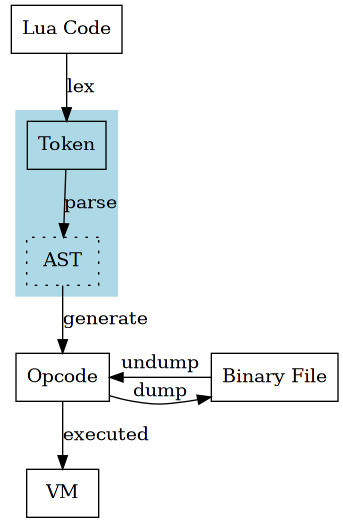
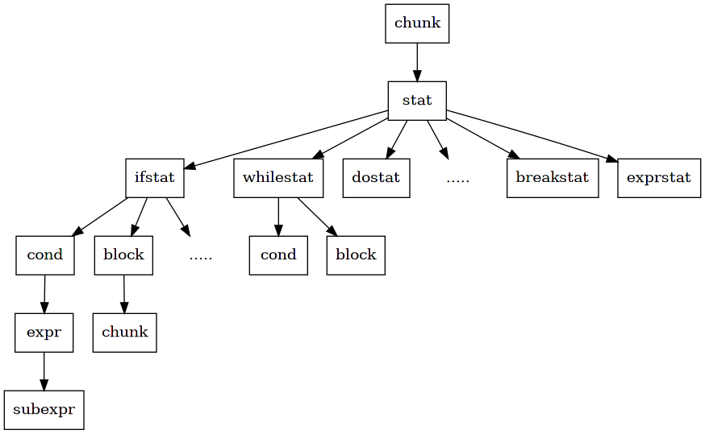

parser
在 lexer 章节提到，lua 为了效率，将语法分析到代码生成的所有功能封装在 parser 模块中。 在过程中，没有 AST IR 等中间产物，直接从 token 到 opcode，一步到位。 相对的，这部分代码就相对难以理解。
虽然在代码实现没有明显的步骤划分，但是对于读者， 在理解代码过程中，还是先找出不同步骤的影子，最后再串联在一起。
这个章节，就是尝试从代码中“分离”出语法分析的部分，先对模块做初步的理解。

1 grammar
模块以语法分析作为入口，整体是一个语法制导翻译的过程。
官方文档1使用上下文无关文法来描述 lua 语法，但是省略了一些细节。 笔者结合 parser 代码中的实现过程和相关注释，重新整理语法描述如下，使用 EBNF 描述。
chunk ::= { stat [ `;' ] } stat ::= ifstat | whilestat | dostat | forstat | repeatstat | funcstat | localstat | retstat | breakstat | exprstat ifstat ::= IF cond THEN block {ELSEIF cond THEN block} [ELSE block] END cond ::= expr block ::= chunk whilestat ::= WHILE cond DO block END dostat ::= DO block END forstat ::= FOR (fornum | forlist) END fornum ::= NAME = expr `,' expr [`,' expr] forbody forlist ::= NAME {`,' NAME} IN explist forbody forbody ::= DO block repeatstat ::= REPEAT block UNTIL cond funcstat ::= FUNCTION funcname body funcname ::= NAME {`.' NAME} [`:' NAME] body ::= `(' parlist `)' chunk END parlist ::= [ DOTS | NAME {`,' NAME} [`,' DOTS] ] localstat ::= LOCAL FUNCTION NAME body | LOCAL NAME {`,' NAME} [`=' explist] retstat ::= RETURN [explist] breakstat ::= BREAK exprstat ::= assignstat | funccallstat assignstat ::= (prefixexp | primaryexp (`.' NAME | `[' expr `]')) assignment assignment ::= `,' assignstat | `=' explist primaryexp ::= prefixexp {`.' NAME | `[' expr `]' | `:' NAME funcargs | funcargs} prefixexp ::= NAME | `(' expr `)' funccallstat ::= prefixexp primaryexp (`:' NAME funcargs | funcargs) funcargs ::= `(' [ explist ] `)' | constructor | STRING explist ::= expr {`,' expr} expr ::= subexpr subexpr ::= (simpleexp | unop subexpr) {binop subexpr} simpleexp ::= NUMBER | STRING | NIL | TRUE | FALSE | DOTS | constructor | FUNCTION body | primaryexp binop ::= `+´ | `-´ | `*´ | `/´ | `^´ | `%´ | CONCAT | `<´ | LE | `>´ | GE | EQ | NE | AND | OR unop ::= `-´ | NOT | `#´ constructor ::= `{' [fieldlist] `}' fieldlist ::= field {fieldsep field} [fieldsep] field ::= `[' expr `]' `=' expr | NAME `=' expr | expr fieldsep ::= `,' | `;'
{ a }表示 0 个或多个 a[ a ]表示 0 个或一个 a( a )表示组|表示或- 大写单词，`单字符' 表示终结符，和 lex 阶段生成的 token 一一对应
- 小写单词 表示非终结符，整体以 chunk 为入口
之前提到，在 lex 过程，lua 并没有完全使用 regex 对词法做完整的限制，存在些许不完美的实现。 同样的“问题”在语法分析的 EBNF 描述中也存在。
1.1 binop
在语法描述上，没有控制二元运算的优先级，而是将优先级在 subexpr 过程中用代码隐式实现。
1.2 break
break 语句位置并不是随意的，只能放置在 loop 块中，而语法描述并没有描述这种限制， 同样的，lua 将此限制实现在代码层面。
1.3 return
return 语句只能放置在块的最后一行，而语法描述没有表示出此种限制。
2 recursive descent
parser 模块使用 LL(1) 递归下降法进行语法分析。
递归下降法有一个明显的优点，通常在实现中，
每个非终结符都对应一个同名函数来实现，如 chunk() statement() 等。
1271: static int statement (LexState *ls) { 1272: int line = ls->linenumber; /* may be needed for error messages */ 1273: switch (ls->t.token) { 1274: case TK_IF: { /* stat -> ifstat */ 1275: ifstat(ls, line); 1276: return 0; 1277: } 1278: case TK_WHILE: { /* stat -> whilestat */ 1279: whilestat(ls, line); 1280: return 0; 1281: } 1282: case TK_DO: { /* stat -> DO block END */ 1283: luaX_next(ls); /* skip DO */ 1284: block(ls); 1285: check_match(ls, TK_END, TK_DO, line); 1286: return 0; 1287: } 1288: case TK_FOR: { /* stat -> forstat */ 1289: forstat(ls, line); 1290: return 0; 1291: } 1292: case TK_REPEAT: { /* stat -> repeatstat */ 1293: repeatstat(ls, line); 1294: return 0; 1295: } 1296: case TK_FUNCTION: { 1297: funcstat(ls, line); /* stat -> funcstat */ 1298: return 0; 1299: } 1300: case TK_LOCAL: { /* stat -> localstat */ 1301: luaX_next(ls); /* skip LOCAL */ 1302: if (testnext(ls, TK_FUNCTION)) /* local function? */ 1303: localfunc(ls); 1304: else 1305: localstat(ls); 1306: return 0; 1307: } 1308: case TK_RETURN: { /* stat -> retstat */ 1309: retstat(ls); 1310: return 1; /* must be last statement */ 1311: } 1312: case TK_BREAK: { /* stat -> breakstat */ 1313: luaX_next(ls); /* skip BREAK */ 1314: breakstat(ls); 1315: return 1; /* must be last statement */ 1316: } 1317: default: { 1318: exprstat(ls); 1319: return 0; /* to avoid warnings */ 1320: } 1321: } 1322: } 1323: 1324: 1325: static void chunk (LexState *ls) { 1326: /* chunk -> { stat [`;'] } */ 1327: int islast = 0; 1328: enterlevel(ls); 1329: while (!islast && !block_follow(ls->t.token)) { 1330: islast = statement(ls); 1331: testnext(ls, ';'); 1332: lua_assert(ls->fs->f->maxstacksize >= ls->fs->freereg && 1333: ls->fs->freereg >= ls->fs->nactvar); 1334: ls->fs->freereg = ls->fs->nactvar; /* free registers */ 1335: } 1336: leavelevel(ls); 1337: }
这些函数都有一个共性，全部都接收参数 LexState *ls ，从其得到 token。
部分函数接收参数 expdesc* v ，表示当前过程之后，得到的表达式结果。
expdesc 结构非常关键，在代码生成章节再详细描述。
15: /* 16: ** Expression descriptor 17: */ 18: 19: typedef enum { 20: VVOID, /* no value */ 21: VNIL, 22: VTRUE, 23: VFALSE, 24: VK, /* info = index of constant in `k' */ 25: VKNUM, /* nval = numerical value */ 26: VLOCAL, /* info = local register */ 27: VUPVAL, /* info = index of upvalue in `upvalues' */ 28: VGLOBAL, /* info = index of table; aux = index of global name in `k' */ 29: VINDEXED, /* info = table register; aux = index register (or `k') */ 30: VJMP, /* info = instruction pc */ 31: VRELOCABLE, /* info = instruction pc */ 32: VNONRELOC, /* info = result register */ 33: VCALL, /* info = instruction pc */ 34: VVARARG /* info = instruction pc */ 35: } expkind; 36: 37: typedef struct expdesc { 38: expkind k; 39: union { 40: struct { int info, aux; } s; 41: lua_Number nval; 42: } u; 43: int t; /* patch list of `exit when true' */ 44: int f; /* patch list of `exit when false' */ 45: } expdesc;
如此对照 EBNF 的语法描述，就可以方便地对语法分析的过程有大体的了解。
所有函数之间的调用过程，就像是隐式的 AST 的遍历过程。 代码生成的实现过程就隐藏在这一个个函数中。

整体以 chunk 为入口，下分为多个 stat，每个 stat 有独立的结构，最终到基础的 expr 单元， 像一棵树形结构，自顶向下。
3 practice
luaY_parser 是 parser 模块的入口，
383: Proto *luaY_parser (lua_State *L, ZIO *z, Mbuffer *buff, const char *name) { 384: struct LexState lexstate; 385: struct FuncState funcstate; 386: lexstate.buff = buff; 387: luaX_setinput(L, &lexstate, z, luaS_new(L, name)); 388: open_func(&lexstate, &funcstate); 389: funcstate.f->is_vararg = VARARG_ISVARARG; /* main func. is always vararg */ 390: luaX_next(&lexstate); /* read first token */ 391: chunk(&lexstate); 392: check(&lexstate, TK_EOS); 393: close_func(&lexstate); 394: lua_assert(funcstate.prev == NULL); 395: lua_assert(funcstate.f->nups == 0); 396: lua_assert(lexstate.fs == NULL); 397: return funcstate.f; 398: }
Line 391 调用 chunk，开始递归向下的分析。
读者可以使用调试器，在 chunk 处加上断点，运行 lua 代码， 使用 next/step 观察内部运行的走向，对照 EBNF 来理解语法分析的整体结构。
$ make -s debug source=if.lua
建议最开始以 stat 为单位，对每个 stat 进行独立的观察，最终再整合为宏观的理解。